Geckos from the Late Oligocene and Early Miocene of Peninsular Florida
1 Department of Geology, University of Florida, Gainesville, Florida, USA 2 Division of Vertebrate Paleontology, Florida Museum of Natural History, Gainesville, Florida, USA
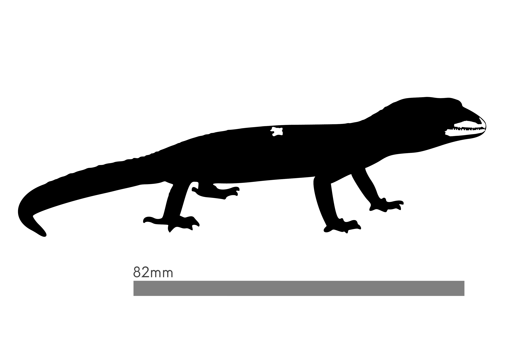
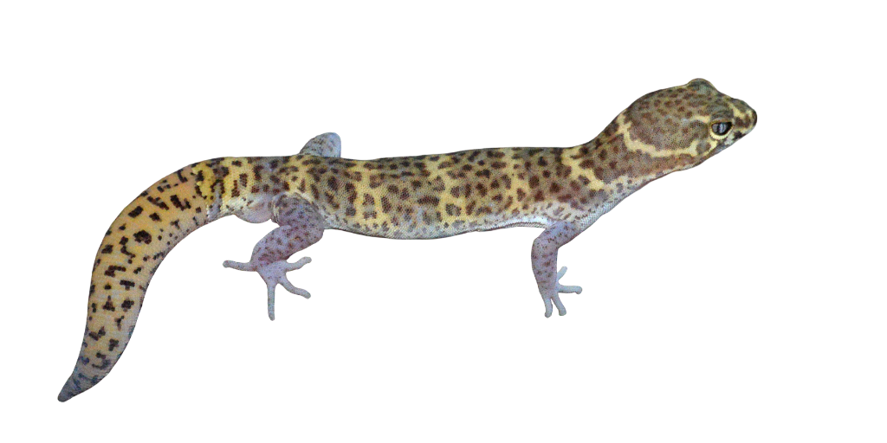
Introduction
Background & context
Geckos have a broad geographic range spanning from xeric deserts to wet tropical rain forest (see Figure 3). Despite estimated divergence time in the early to mid-Jurassic, little is known about their pre-Quaternary fossil record. Recently recovered cranial and vertebral fossils from three of Florida’s oldest sites— Brooksville 2 (~26 Ma), Miller Site (~19.5–19 Ma), and Thomas Farm (TF) (~18.5 Ma)— offer rare insight into this gap. Here, we evaluate the taxonomic identity, biogeographic significance, and paleoecological implications of these specimens across the Oligo-Miocene transition.
While some paleoecological data exist, comprehensive environmental reconstructions remain unresolved, with studies conflicting over Florida’s mid-Cenozoic flora, paleoclimates, and whether these paleoenvironments were insular or peninsular.
Approach
Because geckos and other microvertebrates act as sensitive ecological specialists, they serve as ideal climate proxies. To resolve our understanding of these paleoenvironments, we integrate our gecko findings with a holistic review of the associated microvertebrate assemblages across all three sites.
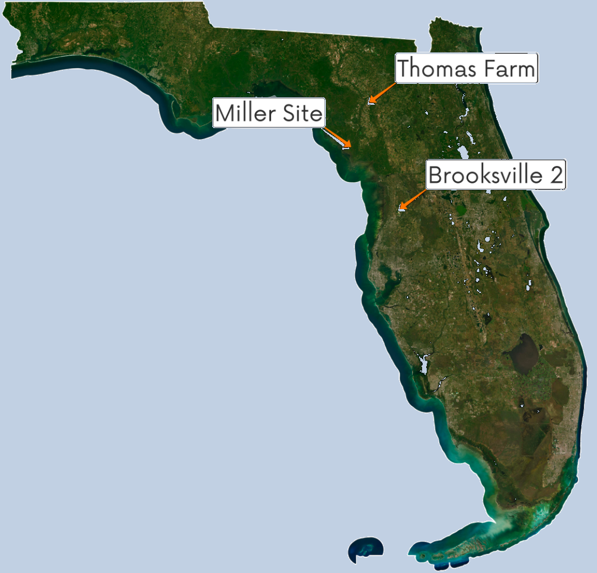
Long description
Thomas Farm lies inland in north-central Florida; Miller Site is on the northwestern Gulf “Big Bend” coast; Brooksville 2 is in west-central Florida north of Tampa Bay. Associated taxa for each site are listed below.
Brooksville 2 ~26 Ma
- Helodermatidae
- Eublepharidae
- aff. Boa
- Rhinophrynidae
- aff. Basiliscus
- aff. Ctenosaura
Miller Site ~19.5–19 Ma
- Helodermatidae
- Eublepharidae
- aff. Boa
- aff. Ctenosaura
- aff. Basiliscus
Thomas Farm (TF) ~18.5 Ma
- Heloderma sp.
- cf. Coleonyx
- Boa sp.
- aff. Basiliscus
- aff. Tadarida
- aff. Ctenosaura
- Heteromyidae
Methods
- Phylogenetic reconstruction: To build a comprehensive cladogram, we compiled a combined dataset. We scored 108 morphological characters (50 newly formulated for this study) and integrated them with 1 molecular, 2 mitochondrial, and 3 nuclear gene regions for a total-evidence phylogenetic analysis. Analyses were run using BEAST2 on the UF supercomputer (HiPerGator).
- Paleoenvironmental modeling: MaxEnt niche modeling was performed using BioClim (BIO 1, 3–7, 12–15; 30 arcsec), topographic (slope and elevation; 30 arcsec), and SoilGrids (sand, silt, clay, pH H2O, SOC; 0–5 cm; 30 arcsec) variables on extant species analogous to Florida fossil taxa to reconstruct Late Oligocene and Early Miocene environments (Figures 1, 2, and 4).
Results
Fossils and comparative specimens
Comparative anatomical plates of Oligo-Miocene gecko elements (Thomas Farm / Brooksville 2) and extant Coleonyx reticulatus. Views follow the poster labels: Dorsal, Labial, Lingual, Anterior, Posterior, and Lateral.
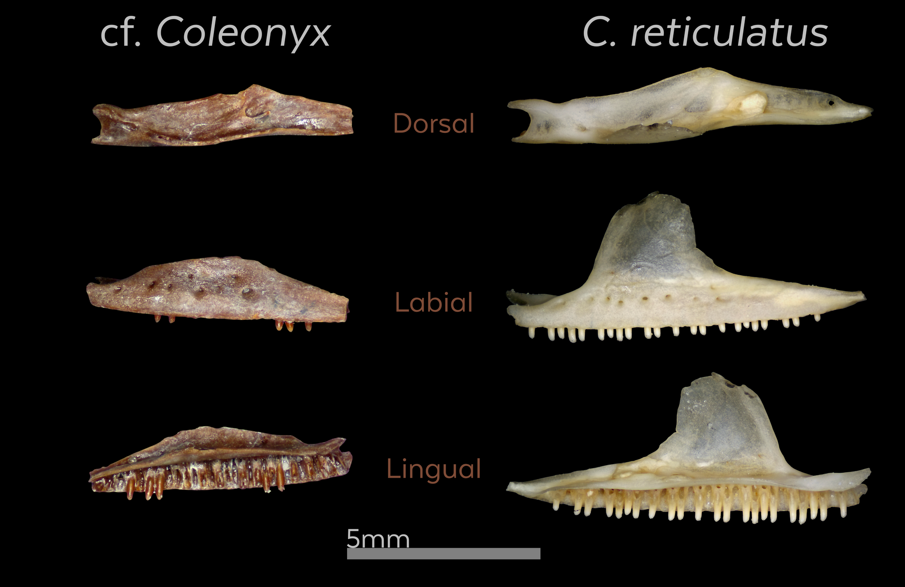
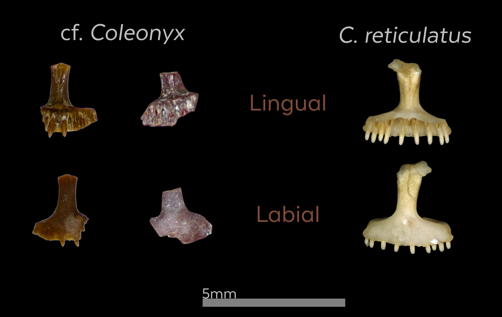
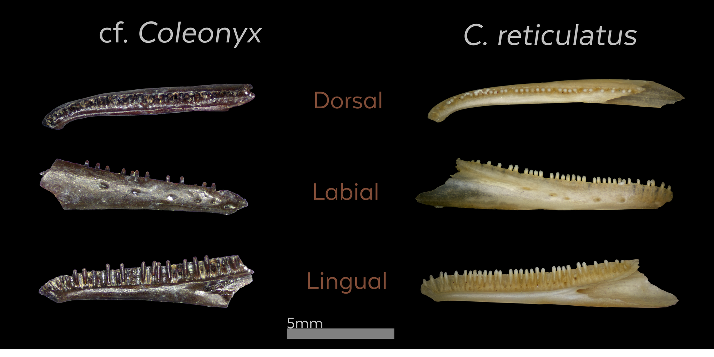


Vertebrae
Comparative vertebral plates. In each row of the later photo plates, specimens are arranged left to right as: cf. Coleonyx (TF), Coleonyx reticulatus, and Eublepharis macularius.
Note: The first plate (vector) includes only the fossil (cf. Coleonyx TF) and Coleonyx reticulatus; it does not include Eublepharis macularius.

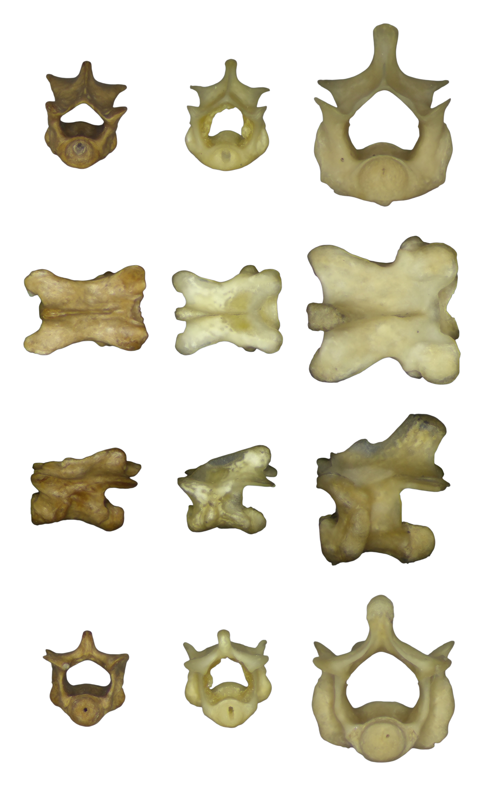
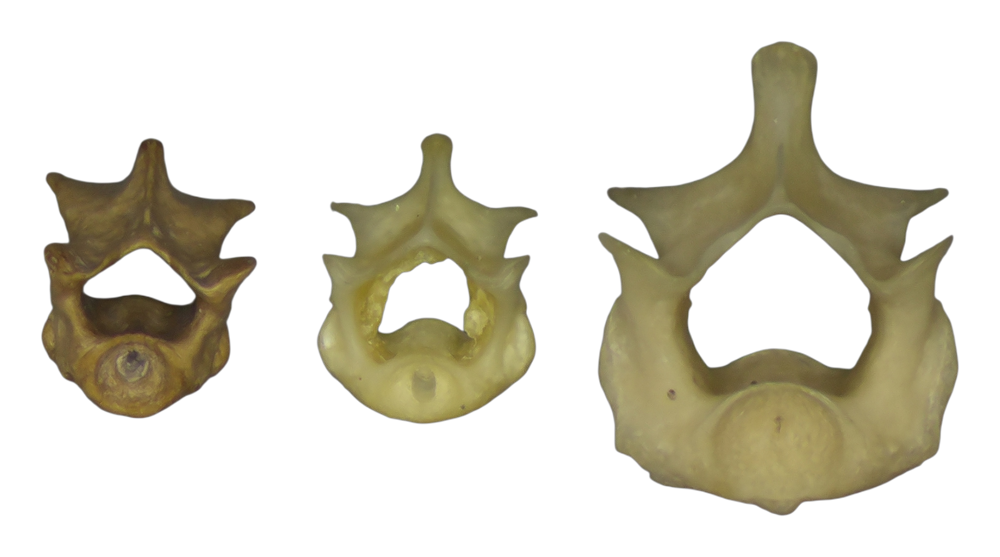
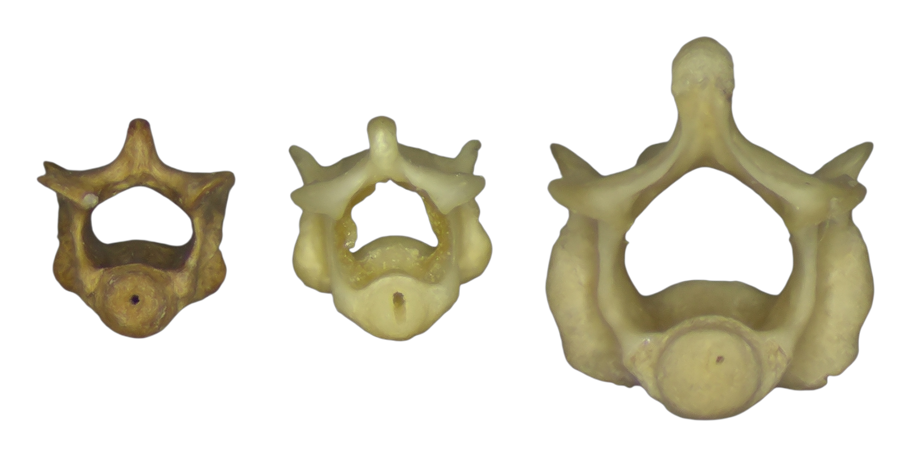
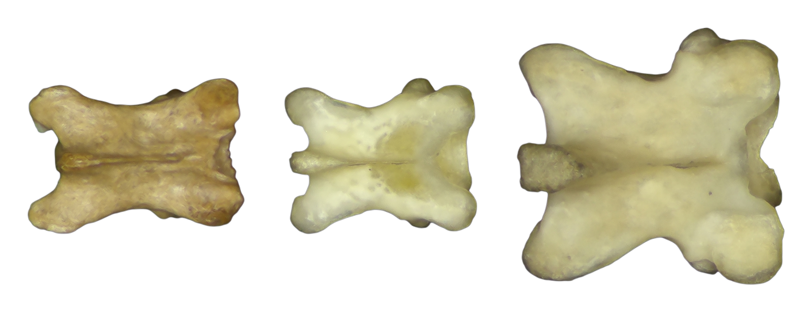
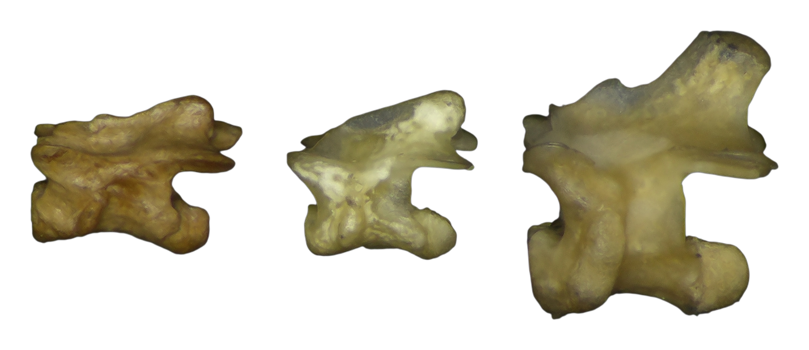

cf. Coleonyx cladogram

Long description & taxa list
Outgroup: Anolis carolinensis. Cretaceous stem gecko Gobekko cretacicus sits near the base. Eublepharids include Hemitheconyx caudicinctus, Eublepharis macularius, and a monophyletic Coleonyx clade containing C. mitratus, C. elegans, C. reticulatus, C. switaki, C. variegatus, C. brevis, and the Thomas Farm taxon (cf. Coleonyx). Other gekkotan terminals include Aristelliger praesignis, Teratoscincus scincus, Sphaerodactylus copei, Gonatodes albogularis, Thecadactylus rapicauda, Phyllodactylus tuberculosus, Gekko gecko, Hemidactylus garnotii, and Cyrtodactylus pulchellus. Poster note: “Node age numbers are in millions of years.”
1. Extant taxa MaxEnt distribution map

Long description
MaxEnt niche modeling using BioClim, topographic, and SoilGrids variables. The top five richness scores concentrate in Central American dry broadleaf forests.
2. Coleonyx distribution map
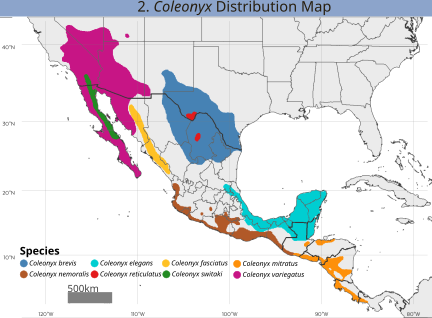
Long description
Modern Coleonyx is concentrated west of the Mississippi, with no native species in Florida today. The Thomas Farm referral expands the known historical range of the genus far east of its present distribution.
3. Gecko families native distribution map

Long description
Family-level ranges show geckos from deserts through wet tropical forests. Eublepharidae have a more restricted modern footprint than Gekkonidae, making Oligo-Miocene Florida occurrences biogeographically significant.
4. Preferred regions by genus

Accessible data table
| Genus | Preferred region along BioClim PC1 | Notes |
|---|---|---|
| Heloderma | Deserts & xeric shrublands / arid | Most arid-leaning of the plotted genera |
| Tadarida | Arid to dry forest | Range spans xeric into dry broadleaf scores |
| Coleonyx | Dry broadleaf / transition | IQR centered near dry–moist forest transition; box plot shown (n≥4) |
| Ctenosaura | Dry to moist broadleaf transition | Box plot shown; overlaps semi-mesic forest belt |
| Rhinophrynus | Toward moist broadleaf / mesic | Wetter end of the sampled gradient |
| Boa | Broad / mesic-leaning | Wide climatic envelope toward moist forest scores |
| Heteromys | Dry–moist transition to mesic | Box plot shown (n≥4) |
| Basiliscus | Moist broadleaf / mesic | Box plot shown; most mesic-leaning lizard genus plotted |
Conclusion
Oligo-Miocene geckos of Florida
- Taxonomic identification: Comparative morphological analysis allies Thomas Farm and Brooksville 2 gecko fossils most favorably with Eublepharidae.
- Phylogenetic placement: Total-evidence phylogenetic analysis supports referring the Thomas Farm geckos as stem to the genus Coleonyx.
- Biogeographic firsts: First pre-Quaternary record of eublepharids in North America and first record of Coleonyx east of Texas.
- Global significance: Brooksville 2 specimens represent the oldest documented occurrence of Eublepharidae globally.
- Chronological impact: Establishes crucial evidence for early Miocene distribution and evolutionary timing of North American eublepharids.
Paleoenvironment of Florida
- MaxEnt modeling indicates top species-richness scores concentrate in Central American dry broadleaf forests.
- Genus-level environmental suitability peaks in the transition zone between dry and moist forests.
- We hypothesize Brooksville 2, Miller, and Thomas Farm were semi-mesic forests, with Thomas Farm functioning as a forest–grassland ecotone.
- This is consistent with Parahippus at Thomas Farm, a transitional forest–grassland taxon.
- Reconstructed habitats align with predictions that the ancestor of modern Coleonyx inhabited a mesic forested environment.
In progress
- Taxonomic anomaly: Fossils resembling Ctenosaura and Basiliscus are under more detailed analysis.
- Sphaerodactylid: Tentative sphaerodactylid material may represent a second Caribbean faunal overlap in late Oligocene Florida; additional screen washing is ongoing.
Author contributions
HN designed the study, identified specimens, collected and analyzed the data, produced figures, performed comparative analysis, and created the poster. JB, AC, and MR contributed to study design, identified specimens, and analyzed data. JB prepared fossil specimens, AC helped with phylogenetic analysis, and MR produced computed tomography data and figures. All authors contributed to conceptualization, interpretation, and editorial feedback.
Acknowledgements
We thank R. Narducci for access to FLMNH vertebrate paleontology collections; A. Jukar and J. Bloch for research permission; and E. Stanley for specimen scans. Special thanks to A. Woodruff for early project help, R. Hulbert Jr. for mammalian and biogeographical contributions, and C. Sheehy III and D. Blackburn for access to FLMNH herpetology collections.
References
Key citations highlighted on the poster. Full bibliography is available via the QR code and APA list.
- Bhullar, B.-A. S., & Smith, K. T. (2008). Helodermatid lizard from the Miocene of Florida… Journal of Herpetology, 42(2), 286–302.
- Blackburn, D. C., et al. (2019). First record of the anuran family Rhinophrynidae from the Oligocene of eastern North America. Journal of Herpetology, 53(4), 316–323.
- Chovanec, K. (2014). Non-anguimorph lizards of the Late Oligocene and Early Miocene of Florida… [Master’s thesis, East Tennessee State University].
- Czaplewski, N. J., Morgan, G. S., & Naeher, T. (2003). Molossid bats from the late Tertiary of Florida… Acta Chiropterologica, 5(1), 61–74.
- Daza, J. D., Bauer, A. M., & Snively, E. D. (2014). On the fossil record of the Gekkota. The Anatomical Record, 297(3), 433–462.
- Dial, B. E., & Grismer, L. L. (1992). A phylogenetic analysis… in the lizard genus Coleonyx… Systematic Biology, 41(2), 178–195.
- Hayes, F. G. (2000). The Brooksville 2 local fauna… Bulletin of the Florida Museum of Natural History, 43(1), 1–47.
- Hulbert, R. C., Jr. (2001). The fossil vertebrates of Florida. University Press of Florida.
- Zheng, Y., & Wiens, J. J. (2016). Combining phylogenomic and supermatrix approaches… Molecular Phylogenetics and Evolution, 94, 537–547.